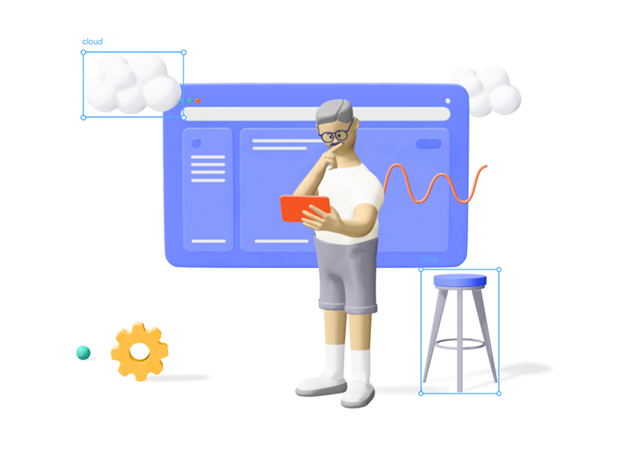

AWS
Amazon Web Services(AWS) is a cloud service from Amazon, which provides services in the form of building blocks, these building blocks can be used to create and deploy any type of application in the cloud.
These services or building blocks are designed to work with each other, and result in applications that are sophisticated and highly scalable..

What? EC2
EC2 is one of the most important services AWS offers. and how to create inestance of AWS and configure it so we can use it, then we should add storage, add tags, configure security group, and review instanse launch, this is the step to connect to AWS..
How?
To connect to your instance using the browser-based client from the Amazon EC2 console:
Open the Amazon EC2 console at https://console.aws.amazon.com/ec2/ (Links to an external site.) (Links to an external site.).
In the navigation pane, choose Instances.
Select the instance and choose Connect.
Choose EC2 Instance Connect.
Verify the user name and choose Connect to open a terminal window.
Price?
Depends on the service you select